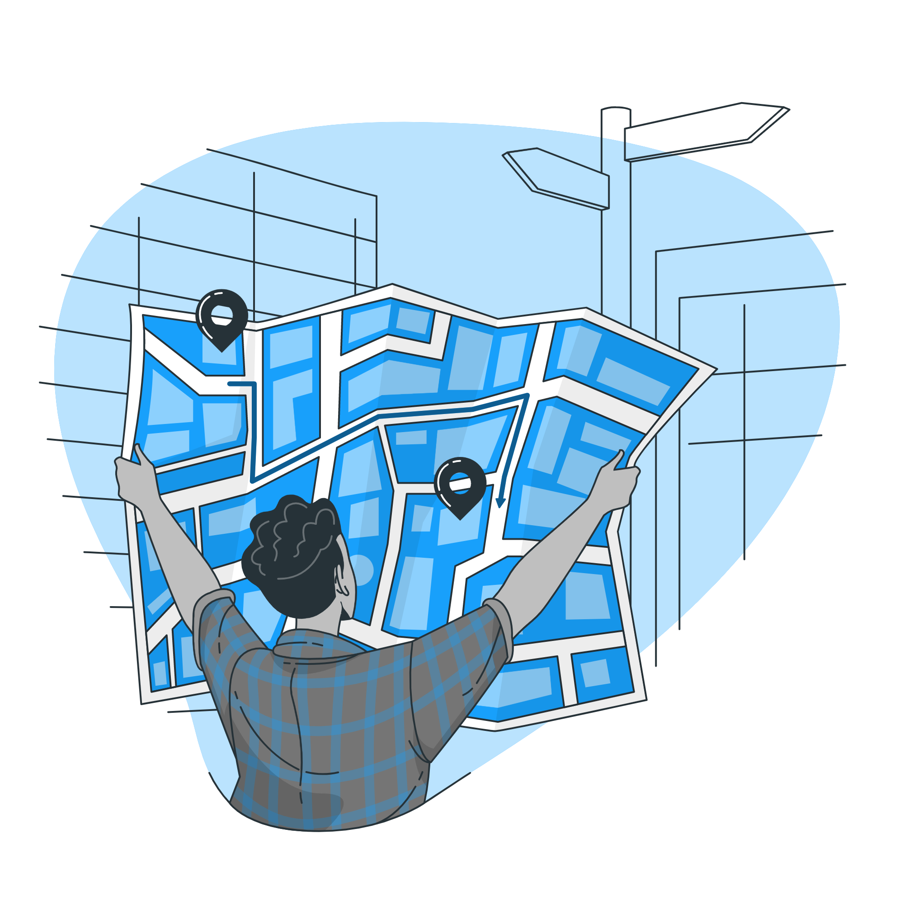

Eventos do Método Scrum
Eventos são usados no Scrum para criar uma regularidade e minimizar a necessidade de reuniões não definidas no Scrum.Os eventos restantes podem terminar sempre que o propósito do evento é alcançado, garantindo que uma quantidade adequada de tempo seja gasta não permitindo desperdícios no processo. Além da Sprint, que é um container para outros eventos, cada evento no Scrum é uma oportunidade de inspecionar e adaptar alguma coisa. Estes eventos são especificamente projetados para permitir uma transparência e inspeção criteriosa.
Sprint
É o principal evento do Framework Scrum, pode ser exemplificada como um “container” dos outros eventos. Uma sprint pode durar de 1 semana a 1 mês, com uma média de duração de 2 semanas. Normalmente tem duração fixa, mas pode ser alterada com base em reuniões da equipe.Ao final de cada sprint, um novo incremento do projeto é concluído e pode ser adicionado ao projeto do cliente, e uma sprint só pode ser iniciada ao término da anterior.Uma sprint tem a participação de toda a equipe (Product Owner, Scrum Master e Time de Desenvolvimento.), e possuí uma meta, que se perder o sentido deve ser cancelada.

A Sprint é composta por:
Sprint planning
Tem que durar no máximo 8 horas, podendo ser fragmentada em duas reuniões de 4 horas.O objetivo da sprint planning é criar o sprint backlog, para isso o Product Owner apresenta o Product Backlog, com as metas e prioridades, e a equipe apresenta suas opiniões e se compromete com a entrega discutida.
Tem que durar no máximo 8 horas, podendo ser fragmentada em duas reuniões de 4 horas.O objetivo da sprint planning é criar o sprint backlog, para isso o Product Owner apresenta o Product Backlog, com as metas e prioridades, e a equipe apresenta suas opiniões e se compromete com a entrega discutida.


Daily scrum meeting
Tem uma duração máxima de 15 min, ou seja, é uma reunião curta que deve ser feita com todos em pé para discutir dois principais tópicos:
Tem uma duração máxima de 15 min, ou seja, é uma reunião curta que deve ser feita com todos em pé para discutir dois principais tópicos:
- O que pretendo fazer até a próxima daily scrum meeting?
- O que me impede de fazer isso?
Sprint Review meeting
Sua duração total deve ser de 4 horas com no máximo 1 hora de apresentação por pessoa. O time apresenta ao Product Owner o que foi realizado na sprint, e para isso nada de maquetes ou power points, a funcionalidade do produto deve ser mostrada em pleno funcionamento . Com base no que foi mostrado, o feedback do Product Owner e/ou das partes interessadas é essencial para saber se aquilo será utilizado, aprimorado ou descartado.
Sua duração total deve ser de 4 horas com no máximo 1 hora de apresentação por pessoa. O time apresenta ao Product Owner o que foi realizado na sprint, e para isso nada de maquetes ou power points, a funcionalidade do produto deve ser mostrada em pleno funcionamento . Com base no que foi mostrado, o feedback do Product Owner e/ou das partes interessadas é essencial para saber se aquilo será utilizado, aprimorado ou descartado.

Sprint Retrospective
Essa reunião deve ter no máximo 3 horas e é moderada pelo Scrum Master. Aqui devem discutir como foi a sprint: o que deu certo, o que deu errado, o que precisa ser melhorado para uma produção mais eficiente ou até divertida.
Essa reunião deve ter no máximo 3 horas e é moderada pelo Scrum Master. Aqui devem discutir como foi a sprint: o que deu certo, o que deu errado, o que precisa ser melhorado para uma produção mais eficiente ou até divertida.